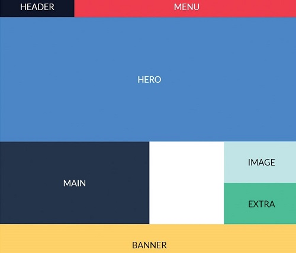

CSS Grid Layout
By Team Brendan
Summary
- What is grid?
- Why Grid is important
- CSS grid features
- CSS Grid Terminology
- Responsive Grid Layout
What is grid?
A grid is a set of intersecting horizontal and vertical lines defining columns and rows. Elements can be placed onto the grid within these column and row lines. CSS Grid Layout introduces a two-dimensional grid system to CSS.
WHY IMPORTANT
Grids can be used to lay out major page areas or small user interface elements. Grid layout offers a grid-based layout system, with rows and columns, making it easier to design web-pages without having to use floats and positioning.
The Basic Grid Features
Fixed and flexible track sizes. ...
Item placement. ...
Creation of additional tracks to hold content. ...
Alignment control. ...
Control of overlapping content. ...
The fr Unit. ...
Track listings with repeat() notation. ...
Advantages of the 2-Dimensional layout
- As many columns or rows as we want
- Ability to have different layouts
- No need to create a lot of media queries
- Faster, more responsive and SEO-friendly websites
Flexbox Vs Grid
Flexbox
Grid
good for small design, with few rows and columns
ideal with big design
display: flex
display: grid
when one dont know how the the content is going to look
when one know how the elemts will look like
Two dimensional
Three dimensional
No Break Points
Grid Gap Property
Need some Hacks like (margins,
transforms, or absolute positioning)
Over Lap Elemant. need rows and columns
two-dimensional layout system helps a lot when
to use rows and columns together, and position the elements the way we want
You need a layout-first design
| Flexbox | Grid |
|---|---|
| good for small design, with few rows and columns | ideal with big design |
| display: flex | display: grid |
| when one dont know how the the content is going to look | when one know how the elemts will look like |
| Two dimensional | Three dimensional |
| No Break Points | Grid Gap Property |
| Need some Hacks like (margins, transforms, or absolute positioning) | Over Lap Elemant. need rows and columns |
| two-dimensional layout system helps a lot when to use rows and columns together, and position the elements the way we want | You need a layout-first design |
css grid Terminology
- Grid Container
- Grid Item
- Grid Line
- Grid Cell
- Grid Track
- Grid Area
- Grid Gap
Grid Container
Element containing a grid, defined by setting display: grid;
Grid Item
Element that is a direct descendant of the grid container.
Grid Line
Grid Cell
Grid Area
Grid track
Grid Gap
Responsive CSS Grid Layout
Grid Sketchup
Creating the Container and its Children


Desktop preview
Creating Columns


Desktop preview
Creating rows


Desktop preview
Specifying the grid-template area


Assigning grid areas


Creating space between the elements


Styling the elements


Mobile preview
Adding a media query


The Most Powerfull lines in Grid
Fluid width columns that break into more or less columns as space is available, with no media queries! Here is an Example
The repeat function allows you to repeat columns as many times as needed. With the auto-fill attribute we can dictate how wide our tracks are and let Grid figure out how many will fit in the available space. Minmax is picking up the maximum value between min and max. Its like we tell the browser to handle the column sizing and element wrapping for us, so that the elements will wrap into rows when the width is not large enough to fit them in without any overflow. The fraction unit we used also ensures that, in case the width allows for a fraction of a column to fit but not a full column, that space will instead be distributed over the column or columns that already fit, making sure we aren’t left with any empty space at the end of the row.
Some examples of Grid


THANKYOU🙂